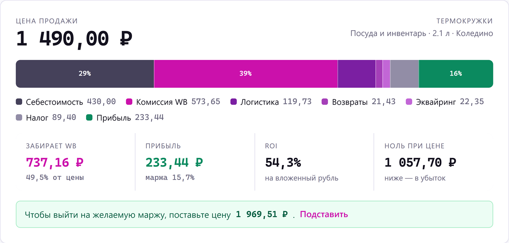

Сайты и приложения, которыегрузятся мгновеннои не ломаются
Лендинги под заявки, веб-приложения с базой и личным кабинетом,
PWA и программы для Windows. Без конструкторов и лишних
зависимостей: исходный код остаётся вашим, и проект можно
развивать дальше.
Доработка и поддержка существующего сайта — от 2 500 ₽/час.
Если не знаете, к какой категории относится задача, просто опишите её —
разберусь и скажу цену.
// Кейсы
Продукт · в разработке
Калькулятор юнит-экономики Wildberries
Сервис показывает продавцу на Wildberries, сколько он реально
зарабатывает с товара: комиссия категории, логистика по объёму
и коэффициенту склада, возвраты, хранение, реклама, штрафы,
эквайринг и налог — постатейно, до копейки. Тарифы тянутся
из API Wildberries по расписанию, отчёт о реализации
сверяет план с фактом, а выгрузка в Excel уходит
с живыми формулами: продавец меняет цену в файле
и сразу видит новую маржу.

Реальный расчёт: термокружка за 1 490 ₽ со склада Коледино.
Половину цены забирает маркетплейс.
Лендинг мебельной мастерской, который принимает заказы. Каталог,
категории, цены и наличие живут в базе — владелец меняет их
без разработчика. Корзина не теряется при перезагрузке, заказ
сохраняется на сервере и уходит в Telegram, а цену при
оформлении сервер берёт из базы, а не из того, что прислал
браузер. Форма закрыта тремя рубежами от ботов и чужих сайтов.
Одностраничник для студии автодетейлинга премиального сегмента:
услуги полировки, керамики и защиты кузова, галерея работ
«до и после», прайс и форма заявки. Интерактивная подсветка
в первом экране следует за курсором, изображения сжаты,
вёрстка адаптивная. Ноль зависимостей — страница открывается
меньше чем за секунду и живёт на любом хостинге.
Посадочная страница платформы, которая превращает регламенты и базу
знаний компании в готовые курсы. Восемь смысловых блоков: оффер,
проблема, пять шагов работы сервиса, сравнение с LMS и
конструкторами курсов, отраслевые сценарии, выгоды и вопросы.
Всё оформление на CSS — ни одной картинки и ни одной
зависимости, включая макет интерфейса на первом экране.
Страница живёт в одном файле и разворачивается копированием.
Ассистент для водителя: озвучивает входящие сообщения Telegram и
отправляет ответы под диктовку, чтобы за рулём не брать телефон
в руки. Водитель слышит «Иван пишет: ты где?» и отвечает вслух —
нейросеть превращает сырую надиктовку «эээ скажи ему что буду
минут через десять наверное пробка» в «Буду минут через 10, тут
пробка» и отправляет собеседнику. Распознавание и синтез речи
работают офлайн: в туннеле и на трассе без связи ассистент
продолжает работать.
Реализация в коде чужого дизайн-концепта. Автор макета —
Kateryna Sharova, моя работа здесь — вёрстка и поведение.
Лендинг финтех-платформы и рабочий дашборд: баланс, инвестиции,
денежный поток, операции, карты и цели. Светлая и тёмная темы
с запоминанием выбора, перестраиваемый график, демо ассистента.
Диаграмма баланса собрана метаболами — SVG-круги под фильтром
размытия, из-за которого между ними появляются перетяжки, —
и заливка задана переменными, поэтому фигура сама подхватывает
тему. Ни одной картинки и ни одной зависимости: всё,
включая графику, нарисовано кодом. За дашбордом стоит настоящий
бэкенд: счета, операции и сводки приходят из базы, а без входа
страница показывает демонстрационные данные — так и задумано.
Генератор структурированных промптов для нейросетей: описываете
задачу по-русски — получаете готовый промпт на английском.
Восемь режимов работы, 21 целевая модель со своими правилами
формата, история, экспорт в файл, интерфейс на двух языках.
Ставится как приложение и работает офлайн.
Трекер экранного времени с режимом Помодоро: таймеры сессий,
статистика и хранение данных на устройстве. Собран в двух видах
из одной кодовой базы — как PWA для браузера и как программа
для Windows с установщиком и автообновлениями через GitHub.
Фоновый ассистент для Windows: строка запуска по Alt+Space,
управление системой голосом и текстом, объяснение кода
из буфера обмена. Распознавание речи, wake-word «Джарвис»
и синтез голоса работают полностью офлайн, языковая модель —
локальная, через Ollama. Ни один запрос не уходит в интернет.
Менеджер паролей, который не ходит в облако. Хранилище
зашифровано AES-256-GCM, ключ выводится из мастер-пароля
через PBKDF2 с 600 000 итераций. К записям крепятся вложения,
буфер обмена очищается через 30 секунд, доступ восстанавливается
по резервной фразе из 16 слов.
Никаких «сделаю и покажу через месяц» — рабочую версию видно по ходу.
01
Разбираем задачу
Двадцать минут разговора: что нужно, для кого и какой результат
считается успехом. Бесплатно и без обязательств.
02
Смета и структура
Фиксирую объём, срок и цену письменно. Вы видите структуру
страниц до того, как я начну писать код.
03
Разработка
Показываю рабочую ссылку по ходу дела, а не в конце. Правки
на этом этапе входят в стоимость.
04
Сдача и поддержка
Деплой, домен, исходный код, инструкция. Две недели после
запуска правлю замечания бесплатно.
Что остаётся у вас: репозиторий с исходным кодом и историей
изменений, README с инструкцией по запуску и проект, который можно
развивать дальше — своими силами или моими.
// Обо мне
Меня зовут Ясин. Пишу на чистом JavaScript и CSS там, где важна
скорость загрузки, и на TypeScript с Node.js там, где нужны база
данных, авторизация и расчёты. Отдельная история — Python: от
десктопных утилит до голосового ассистента с офлайн-распознаванием
речи и приложением на Kotlin к нему.
Четыре года внутри операционки Wildberries: знаю, как считается
юнит-экономика, где селлеры теряют маржу и что реально болит на
складе. Поэтому в проектах для маркетплейсов я разбираюсь в
предметной области, а не только в коде: свой калькулятор
юнит-экономики я написал потому, что своими руками видел, из чего
складывается маржа.
Каждый проект довожу до конца: развёртывание, документация,
установщики. Не сдаю работу со словами «локально работает».
Строк в самом крупном проекте
18 400
Публичных репозиториев с кодом
9
Года внутри e-commerce
4
// Частые вопросы
Сколько времени занимает лендинг?
От трёх до семи рабочих дней, если тексты и фотографии готовы.
Если текстов нет — помогу собрать структуру и подскажу, что
должно быть на странице.
Что входит в правки?
Два круга правок после согласования структуры и ещё один после
сборки. Мелкие исправления вроде опечаток, отступов и замены
фотографий — без счёта.
Кому принадлежит код?
Вам. Отдаю репозиторий целиком — с историей изменений
и документацией. Вы не привязаны ни ко мне, ни к конкретному
хостингу.
Как строится оплата?
Половина до начала работы, половина после сдачи. Для задач
длиннее месяца делим на этапы и платим по мере их закрытия.
Почему не на конструкторе?
Сайт на конструкторе грузится в разы дольше, его нельзя
перенести на другой хостинг и нельзя доработать за пределами
того, что предусмотрел конструктор. Ручная вёрстка открывается
меньше чем за секунду и остаётся вашей.
А если задача сложнее, чем сайт?
Тогда это веб-приложение: база данных, вход по логину, расчёты,
отчёты, интеграции с чужими API. Такие проекты я тоже делаю —
самый крупный на сегодня это 18 400 строк на TypeScript.
// Обсудим задачу
Напишите, что нужно сделать — отвечу в течение дня. Разбор задачи
и смета бесплатно, даже если потом решите делать не со мной.